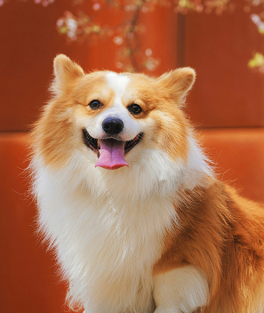
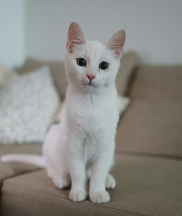

팝업
찾습니다
가족을 찿습니다
-
실종
포메라이안
- 실종장소 경기도 파주시 금파 빗물 펌프장 연결 된 산
- 실종날짜 2025-04-15
- 특이사항 오른쪽 뒷발이 불편하여 걸을 때 절뚝이고 뛸 때는 들고 뜀
-
종료
코리아 쇼트 헤어
- 실종장소 울산광역시 울주군 웅촌면 초천리
- 실종날짜 2025-04-05
- 특이사항 애기때부터 키운 아이가 아니라서 대략 9~10살로 생각하고 있습니다
-
실종
비숑
- 실종장소 경기도 이천시 호국원
- 실종날짜 2025-05-25
- 특이사항 털이 많지 않은 실버푸들입니다
-
종료
시베리안 허스키시베리안 허스키
- 실종장소 대구광역시 달성군 서재보성타운 1차
- 실종날짜 2025-05-22
- 특이사항 가슴에만 조금 흰털이 있음
주인을 찿습니다
-
종료
웰시코기
- 실종장소 경기도 화성시 경기도 화성시 서신면 백미길 28-32
- 실종날짜 2025-05-20
- 특이사항 덩치가 조금크고, 왼쪽 콧구멍에 점이 있음
-
목격
믹스묘
- 실종장소 경기도 화성시 새비봉서로 145 비봉성당 뒷 마당
- 실종날짜 2025-05-15
- 특이사항 출근보니 성당 뒷마당에서 나왔어요.다
-
구조
포메라이안
- 실종장소 경기도 김포시 2025-05-25 구래역 마루호텔 1층
- 실종날짜 2025-05-14
- 특이사항 코 주변과 발바닥이 붉으스름 합니다.
-
목격
골든리트리버
- 실종장소 서울특별시 도봉구 방학동 신화하니엘시티 101동 406호
- 실종날짜 2025-05-20
- 특이사항 중대형 견 체구 작고 마름,다소 들개처럼 생김, 갈색눈
구조동물 발견 시 대처요령
공공장소!에서 주인 없이 떠도는
동물!을 발견한 경우
관할 시군구청 또는 동물보호센터!에
신고!하시기 바랍니다.
※소유자를 알 수 없는 동물을 신고하지 않고 알선·구매하는 경우, 포획하여 팔거나 판매하거나 죽일 목적으로 포획하는 경우에는 동물보호법
제10조제3항제1호·제3호·제4호를 위반하여 2년 이하 징역이나 2천만원 이하 벌금이 부과됩니다.
가족이 되어주세요


Adoption is a wonderful way to give a deserving animal a loving home.Adoption is a wonderful way to give a deserving animal a loving home.